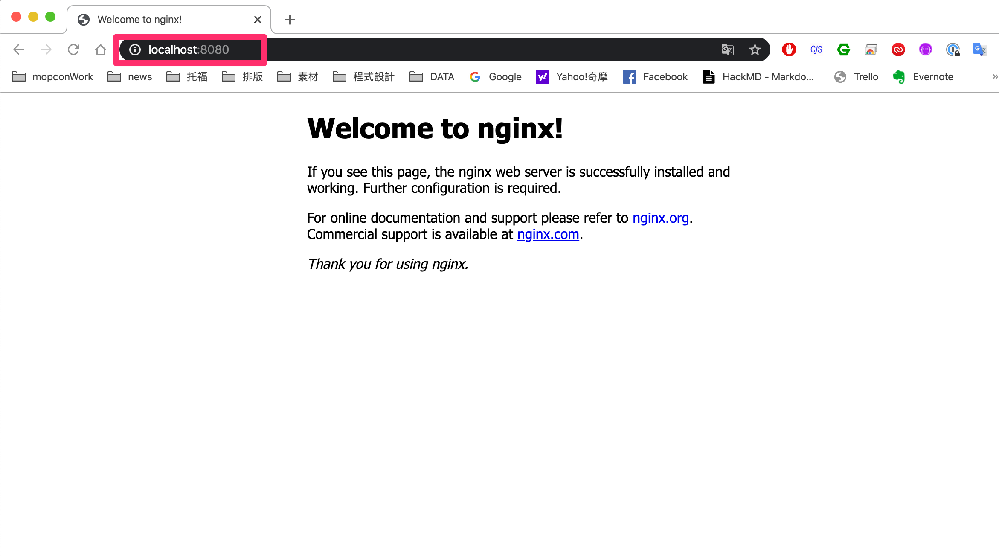

Docker Container - 基本概念
簡述 Docker Container 使用方式、基本常用指令
概念
container 是根據 image 產生的，image 是根據 dockerfile 產生的，所以 container 包含什麼、有什麼功能都是依據 dockerfile 的內容所決定的
image 可以想像成 container 的規格、標準，每次使用相同的 image 開啟 container 的時候，可以確保執行的功能都會是一模一樣的
常用指令
1 | docker container run [OPTIONS] IMAGE [COMMAND] [ARG...] |
運行一個 nginx1
docker container run -p 8080:80 nginx

如果電腦上沒有 nginx 的 image 會從 docker 的儲存庫下載，預設通常是官方的 Docker Hub
上面這行指令中 -p 是 --port 的縮寫，傳入兩個參數，一個是主機的 port (8080) ，一個是 container 的（80），代表的意思是將 container 的 80 埠對應到主機的 8080 埠
所以在主機的電腦上可以開啟瀏覽器輸入 localhost:8080 就會看到 container 開啟的 nginx 伺服器

如果要知道開啟的 port 是多少，基本上有三種方法
從 Docker Hub 上的說明中查詢

從 Docker Hub 上的 tag 中查詢
從 dockerfile 裡面查詢

EXPOSE 是 dockerfile 中的指令，代表服務對外開啟的 port
這邊可以開始感受到
dockerfile 是 image 的藍圖
image 是 container 的樣板
所以在使用 image 的時候最好可以看到 dockerfile 才可以確保開啟的 container 有做什麼事情
1 | docker container run -v ~/Documents/demo:/usr/share/nginx/html -p 8080:80 nginx |
這次加上 -v 是 --volume 的縮寫，代表綁定檔案目錄，藉由設置這個參數可以修改 container 中要執行的檔案，這邊綁定了 nginx 的預設目錄，就可以修改預設顯示的頁面了
其他還有許多參數可以設定
-d --detach 代表背景執行，執行後只會回傳 container ID
-i --interactive 開啟互動模式，可以直接操作 container